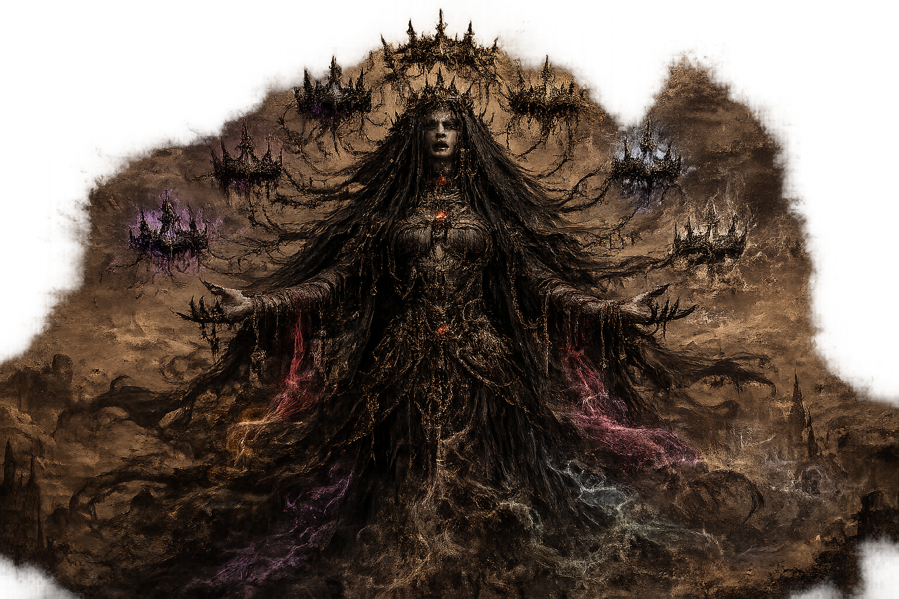
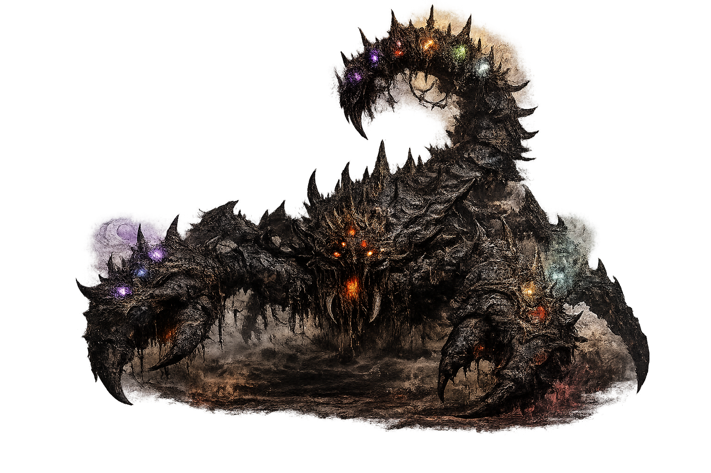
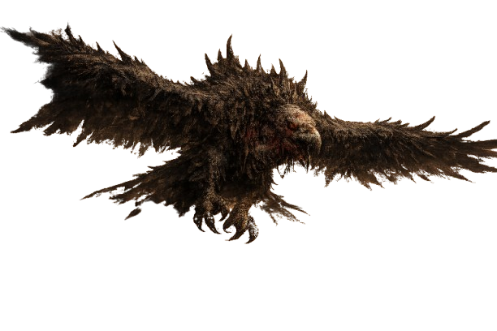

Uma vastidão de areias ardentes e ruínas esquecidas. Tempestades de areia surgem do nada, e criaturas adaptadas ao calor extremo dominam este território implacável.
SOBRE O BIOMA
Reis que ousaram rivalizar com os deuses destruíram seu próprio povo pela ambição. O império virou areia, os nomes foram apagados. Mas o esquecimento não trouxe paz: sob as dunas, suas almas ainda vagam, presas para sempre entre a ambição que os moveu e o sofrimento que causaram. Alguns reinos não merecem ser lembrados. Outros… não conseguem ser esquecidos.
DICA DE EXPLORAÇÃO
Leve proteção contra o calor e fique atento às tempestades de areia. Algumas criaturas se escondem até o momento certo para atacar.


